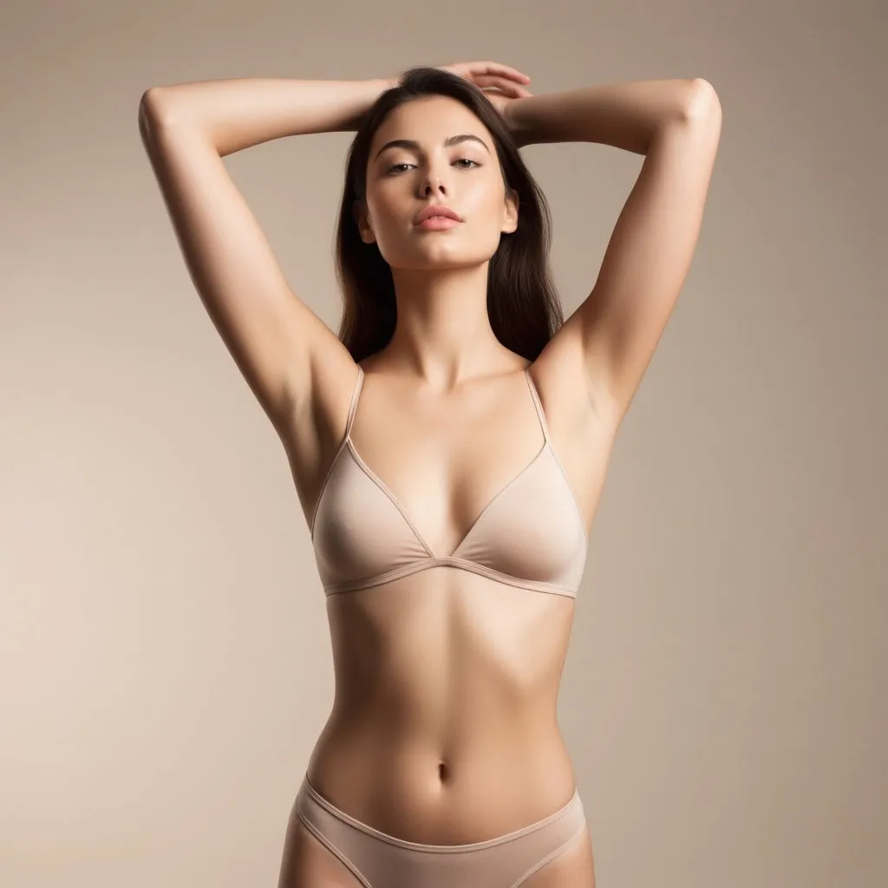

Почему нужно 6-10 процедур, а не одна: всё о циклах роста волос

«А можно всё удалить за один раз?» — вопрос, который слышит каждый мастер лазерной эпиляции. Короткий ответ: нет. И дело не в жадности студий, а в биологии. Волосы на нашем теле живут по своим законам — и лазер работает только с теми, что находятся в нужной фазе. Давайте разбираться.
Три фазы жизни волоса
Каждый волос проходит три стадии. Анаген — активный рост, волос связан с фолликулом и насыщен меланином. Именно в этой фазе лазер видит и разрушает волос. Катаген — переходная стадия, рост останавливается, связь с фолликулом слабеет. Телоген — волос уже мёртвый, держится в коже и скоро выпадет сам.
Лазер работает только в фазе анагена. И в любой момент времени лишь 20–30% волос на вашем теле находятся именно в ней. Остальные — спят или умирают.
Почему нельзя просто подождать и прийти когда все проснутся
Циклы не синхронизированы. Соседние волоски на одном квадратном сантиметре могут находиться в разных фазах. Пока одни в анагене и гибнут от лазера, другие спят в телогене и проснутся только через 4–8 недель. Поэтому нужно несколько сеансов с интервалом — чтобы поймать каждый волосок в нужный момент.
Сколько процедур нужно для разных зон
Лицо и подмышки — 6–8 процедур с интервалом 4–6 недель. Бикини и ноги — 6–10 процедур с интервалом 6–8 недель. Спина и грудь у мужчин — 8–12 процедур. Это средние цифры. Точный план составляет мастер после осмотра.
Что будет если сделать только одну процедуру
Выпадет 20–30% волос. Через 3–4 недели кожа будет гладкой. Затем проснутся спящие фолликулы, и волосы начнут расти снова. Через 2–3 месяца после одной процедуры вы вернётесь к исходной картине. Поэтому нужен курс.
Почему абонемент выгоднее разовых процедур
Курс из 6 процедур глубокого бикини в абонементе стоит 13 000 ₽. Шесть разовых процедур — 15 000 ₽. Экономия 2 000 ₽. Плюс вы гарантированно проходите полный курс и получаете результат. Разовые процедуры часто растягиваются, интервалы нарушаются, и эффективность падает.
Составим план процедур лично для вас
Приходите на консультацию в студию у м. Водный стадион. Определим ваш тип волос и составим график процедур. Скидка 30% новым клиентам.
ЗаписатьсяЗвоните: 8 (991) 574-47-17
подскажем, какая эпиляция вам подходит.